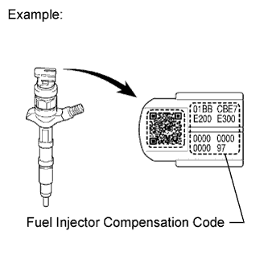

ECD SYSTEM > PRECAUTION |
| 1.FUEL INJECTOR COMPENSATION CODE |
Each fuel injector has different fuel injection characteristics. In order to optimize fuel injection performance, the ECM compensates for these differences by adjusting the fuel injection duration of each fuel injector according to its compensation code. Fuel injector compensation codes are unique, 30 digit, alphanumeric values printed on the head portion of each fuel injector.
 |
When a fuel injector is replaced, the new fuel injector compensation code must be input into the ECM.
When the ECM is changed, all of the existing fuel injector compensation codes must be input into the new ECM.
If an incorrect fuel injector compensation code is input into the ECM, the engine assembly may rattle or engine idling may become rough. In addition, engine failure may occur and the life of the engine may be shortened.
| 2.FOR USING INTELLIGENT TESTER |